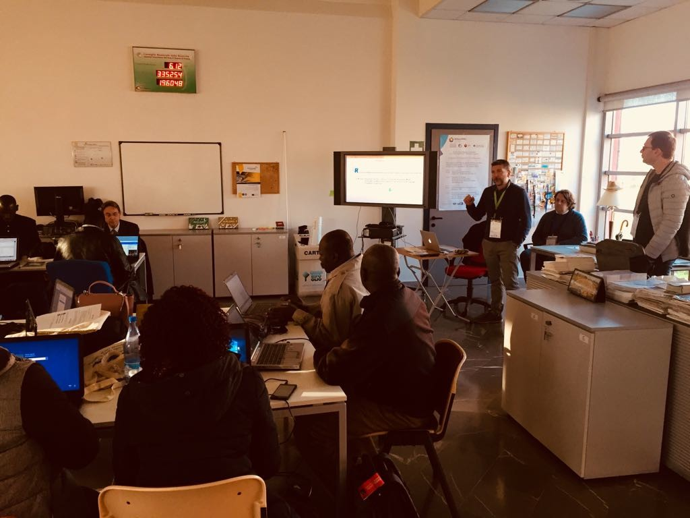

Edmondo Di Giuseppe, PhD
Postdoctoral Research Assistant
Institute for Biometeorology CNR-IBIMET
National Research Council
Curriculum Vitae
Education
M.S., Economic Statistics, Sapienza University of Rome 2002
Ph.D., Methodological Statistics, Sapienza University of Rome 2013
(Thesis)
Selected Publications
You can find preprints of most of my work on the
'Xiv
"Libertá va cercando, ch'è sì cara, come sa chi per lei vita rifiuta." (Dante Alighieri-Divina Commedia, Purgatorio, Canto I, 71-72)